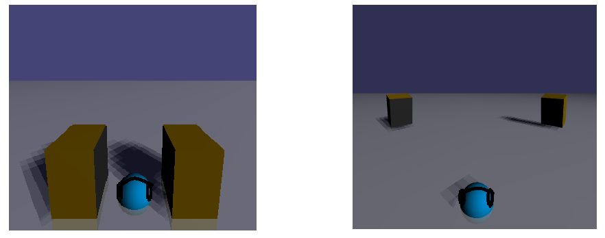

Supported audio codec is FLAC, WAV, MP3, OGG, and requires a PC/Mobile Phones,Tablet supported WebAudio.
Use sliders / drag / swipe to move speakers.
( x : distance between the speakers y/z: height / depth of the speakers. )

[URL]
for PC : https://virtualsp.github.io/VirtualSPD/
( !! Chrome V60,61 causes audio latency! USE Chrome Dev62.0.3202.9 or Firefox )
for Mobile : https://virtualsp.github.io/VirtualSPM/
( Brawser : Chrome / Firefox ... )
[* features *]
/ Sorround effects
/ Display embeded Album Art
/ Supports FLAC files !!
/ Added play loop button
/ Improved sound quality / Corresponds to the earphone
/ Automatically save/load speakers position for each music file on local storage
/ Multiple file select available
/ Surround speakers & Bass-Treble control